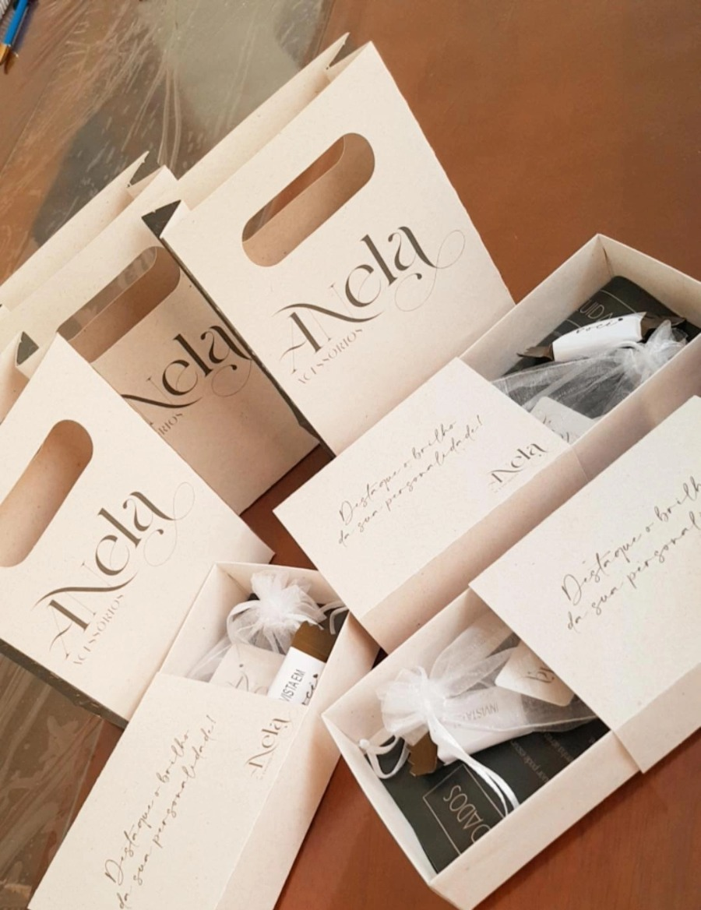

Em meio minuto
Se você tem meio minuto, comece por aqui.
É mais rápido ver do que ler. Depois disso, o resto da página explica com calma.
O que chega na sua mão
Não é uma sacolinha com peça solta.
Cada peça sai daqui embalada pra ser entregue como presente — saquinho de cetim, cartela, fita. Quando a sua cliente abre, ela não vê uma revenda. Ela vê uma marca. É isso que faz ela pagar o preço sem pedir desconto, e voltar no mês seguinte.

Onde a peça nasce
O banho é feito aqui dentro.
A peça bruta chega, é analisada, e o banho de ouro é dado na nossa própria galvânica — não terceirizado. Depois disso cada peça é conferida de novo, uma a uma, antes de entrar numa maleta.
A fórmula do banho é da casa e a gente não abre. É que nem receita de refrigerante: é segredo — mas é segredo dos bons. Quem garante isso não é um número num papel, é a peça durando no pescoço da sua cliente e ela voltando pra comprar de novo.
É por isso que a garantia é de 2 anos. A gente só consegue dar esse prazo porque controla o processo do começo ao fim.
Pra quem é
Não é sobre currículo. É sobre com quantas pessoas você fala numa semana.
A maleta funciona quando alguém já tem por perto gente que confia nela. Se isso descreve o seu dia, você provavelmente se reconhece em alguma linha abaixo.
-
Você atende gente o dia inteiro
Salão, manicure, estética, consultório. A cliente senta na sua frente e vocês conversam por uma hora.
-
Você é conhecida no bairro
Trabalha em três casas, dá aula pra duas turmas, leva e busca criança na escola. Todo mundo ali tem o seu número.
-
Você já tem uma renda e quer somar
Registrada, autônoma ou dona do próprio negócio. A maleta entra dentro do que você já faz, não no lugar disso.
-
Você leva compromisso a sério
As peças continuam sendo da Anela até a venda, e o acerto tem data. Quem organiza isso bem é quem fica com a gente por anos.
E uma coisa que a gente fala logo no começo: se hoje você não tem com quem falar, a maleta vai ficar parada e nós duas vamos perder tempo. Melhor conversar sobre isso agora do que daqui a três meses.
O consignado, sem rodeio
Quatro fatos, e nenhum deles muda depois.
-
A maleta é montada aqui
A gente escolhe as peças, confere uma a uma e envia. Você não compra estoque e não paga entrada.
-
As peças ficam com você por 30 dias
Nesse período você mostra, prova, deixa a cliente ver em casa. O ciclo fecha na data combinada.
-
No acerto, você paga o que vendeu
O que não vendeu volta pra Anela. A gente confere, remonta a maleta e ela segue com outra representante.
-
Toda peça tem 2 anos de garantia
Se der problema com a cliente, quem resolve é a Anela. Você não fica no meio sozinha.
Quem já carrega a maleta
Elas contam melhor do que a gente.
Nenhuma dessas mulheres tinha loja. Todas começaram do jeito que você começaria: com uma maleta, e com as pessoas que já falavam com elas todo dia.
A análise
O que a gente olha antes de dizer sim.
São quatro etapas, na ordem, e nenhuma delas é automática — uma pessoa da equipe lê cada uma. Nem todo mundo segue até o fim, e a gente prefere que você saiba disso agora.
-
A conversa no WhatsApp
A Bia entende onde você mora, o que você faz hoje e com quem você fala. É essa conversa que o botão desta página abre.
-
O formulário
Perguntas sobre a sua rotina, a sua rede e o seu jeito de vender. Leva uns dez minutos, e ninguém responde por você.
-
A conferência dos dados
Com a sua autorização, a Anela confere seus dados em bases públicas e de crédito. É o mesmo tipo de checagem de um crediário de loja.
-
A reunião por vídeo
Uma conversa com a equipe, com câmera aberta, sobre a sua região e o seu plano. É aqui que boa parte da decisão acontece.
A resposta nunca sai no mesmo dia. Passar pelas quatro etapas não garante aprovação, e hoje a Anela não trabalha com as regiões Norte e Nordeste.
Quem está do outro lado
Tem escritório, tem estoque e tem gente com nome.
A Anela abriu em junho de 2019 e desde então monta maleta toda semana. Quem confere e fecha a sua é o Welleton. Quem fala com você do primeiro oi até o acerto do mês é a Bia. São as mesmas duas pessoas do começo ao fim — e é por isso que a gente consegue olhar caso a caso.
- 2019Ano de abertura
- 290+Representantes com maleta
- 2 anosDe garantia por peça
Antes de você perguntar
O que toda candidata quer saber.
Preciso pagar alguma coisa pra receber a maleta?
Não. A maleta sai em consignação: as peças continuam sendo da Anela até serem vendidas. Você acerta com a gente o que vendeu, a cada 30 dias.
E o que eu não conseguir vender?
Volta pra Anela no acerto. A gente confere, remonta a maleta e ela segue com outra representante. Isso faz parte do ciclo e acontece todo mês.
Preciso já ter vendido semijoia antes?
A gente pergunta com quem você fala no dia a dia, não há quanto tempo você vende. Boa parte das representantes que estão com a gente hoje nunca tinha revendido nada antes de entrar.
Como eu sei que a empresa existe de verdade?
A Anela está aberta desde 2019, tem CNPJ, endereço e nota fiscal nas peças. Os dados estão no rodapé desta página, e você pode conferir antes de decidir qualquer coisa.
Vocês atendem a minha região?
Hoje a Anela não trabalha com as regiões Norte e Nordeste. Se você mora nessas regiões, a Bia te avisa logo na conversa, pra você não perder tempo com o formulário.
Quanto tempo até eu ter uma resposta?
Depende de quando você terminar o formulário e da agenda da reunião. O que é certo: a resposta não sai no mesmo dia da conversa. A decisão é tomada depois, com tudo em mãos.
Quais dados vocês consultam sobre mim?
Dados cadastrais e de crédito, em bases públicas e privadas, sempre com a sua autorização durante o processo. A Anela usa isso só para a análise da sua candidatura.
Em quanto tempo eu recebo a maleta?
Depois da aprovação, a maleta é montada peça por peça pra você e enviada. Cada uma é conferida antes de sair — por isso não é no mesmo dia.
O próximo passo
Quer saber se o seu perfil combina?
Manda uma mensagem pra Bia dizendo que você leu esta página. Ela começa com você pela primeira etapa da ficha.
Falar com a Bia no WhatsAppSem formulário nesta página. A conversa continua de onde parou.